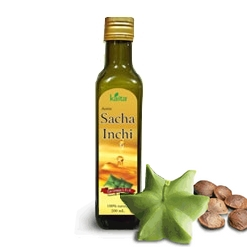

PRODUCTOS

Aceite de Sacha Inchi
Peruvian Ancients Foods SAC, es una empresa agroalimentaria, especialista en la producción, comercialización y desarrollo de súper alimentos innovadores “SUPERFOODS”, provenientes de la biodiversidad peruana, que utiliza procesos y tecnologías que protegen sus compuestos bioactivos y no contaminan el medio ambiente.
Estudios de laboratorio registraron resultados asombrosos, confirmando que esta semilla es la más rica en aceite que todas las demás semillas oleaginosas que existen como del girasol, oliva, soya, maíz, palma y maní. Las semillas del sacha Inchi tienen alto contenido de proteínas (33%) y ácidos grasos esenciales Linolénico, Linoléico y Oleico denominados omega 3(48%), omega 6 (36%) y omega 9 (9%), respectivamente.